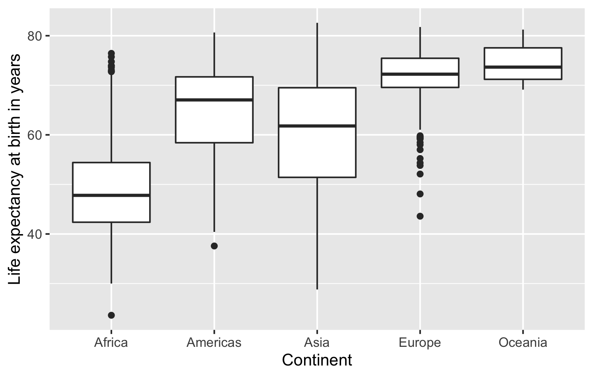
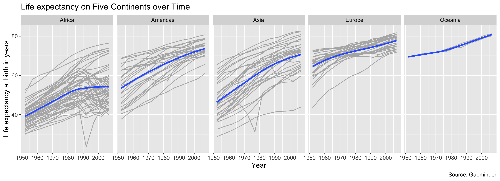

plot_q2 <- ggplot(<arguments>) +
geom_<type>(<arguments>) +
...
plot_q2Problem Set 1: Data Visualization
You can find instructions for obtaining and submitting problem sets here.
You can find the GitHub Classroom link to download the template repository on the Ed Board
Background
In this problem set, you will get your bearings on how to produce an Rmarkdown report and how to produce data visualizations using ggplot. The data we will use is the Gapminder dataset, which gives some economic and demographic information about countries over time. The variables in this data are described below.
| Name | Description |
|---|---|
country |
name of the country |
continent |
name of the country’s continent |
year |
year of the measurement, ranging from 1952 to 2007 in 5-year increments |
lifeExp |
life expectancy at birth, in years |
pop |
population |
gdpPercap |
GDP per capita (US dollars, inflation-adjusted) |
NOTE: In the template you’ll get from GitHub Classroom, the default settings for chunks is to only show the output of the chunk, not the code that generated it (echo = FALSE). This is to give your answers a clean look and to highlight the output rather than the source coe. The template also has a part that will dump all of the R code at the end so that we can look at it if needed.
Question 1 (5 points)
Make sure that you load the gapminder and tidyverse packages in the setup chunk (right after the header). For this question, use the glimpse function to show basic information about the gapminder dataset. In the main text (that is, outside of a code chunk), tell us how many rows and columns there are in the data set and which of the variables are factors.
Rubric: 2 write-up points for using the glimpse function; 2 points for reporting the dimension of the data; 1 point for identifying factors.
Question 2 (10 points)
Let’s investigate how life expectancy varies across the continents. Using ggplot, we want you to recreate the following figure:

These are boxplots of the distribution of life expectancy in each continent. Please make sure that you include the labels as shown in this figure. For the autograder to be able to process your plot, you should assign your the output of your ggplot call to plot_q2 and then evaluate plot_q2 to ensure that the plot is produced in the output. That is, your code should look like this:
Rubric: 10 autograder points.
Question 3 (5 points)
Looking at the previous plot, which continent has the highest median life expectancy? Which part of the boxplot can we determine this from?
Rubric: 5 write up points (2 for identifying the correct continent, 3 for correctly identifying how to find this on the boxplot)
Question 4 (15 points)
The previous boxplot groups all the years together into one boxplot, but what if we want to understand how life expectancy is changing over time? Next, we will recreate the following plot:

The plot shows each country’s life expectancy trajectory over time, broken out by continent with smoothed average lines overlayed for each continent. To get started, we’ll give you a few clues about what we’ve done here:
- The lines for each country use the color
"gray70". - The size of the smoothed line is 1.1 and the method used is the loess smoother. We also have turned off the standard errors.
- Make sure that the facets are all on one row. Look at the
facet_wrapdocumentation if need help with this. - Make sure that the labels are correctly specified.
- Use the chunk options
fig.width = 11andfig.height = 4to shrink the font size so the year labels will not overlap.
Finally, assign the output of your ggplot call to plot_q4 and then evaluate plot_q4 (similarly to what you did in Question 2).
Rubric: 15 autograder points; 0 PDF points.